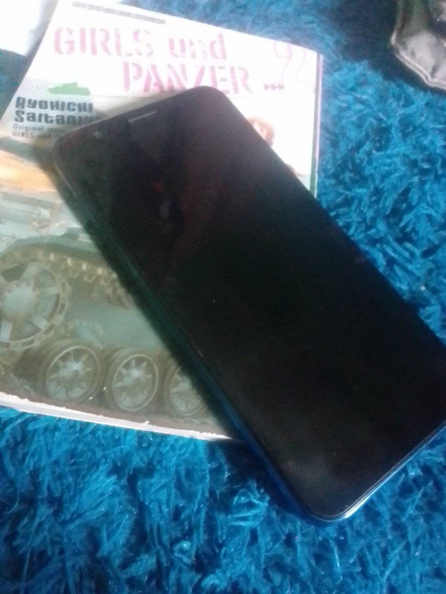
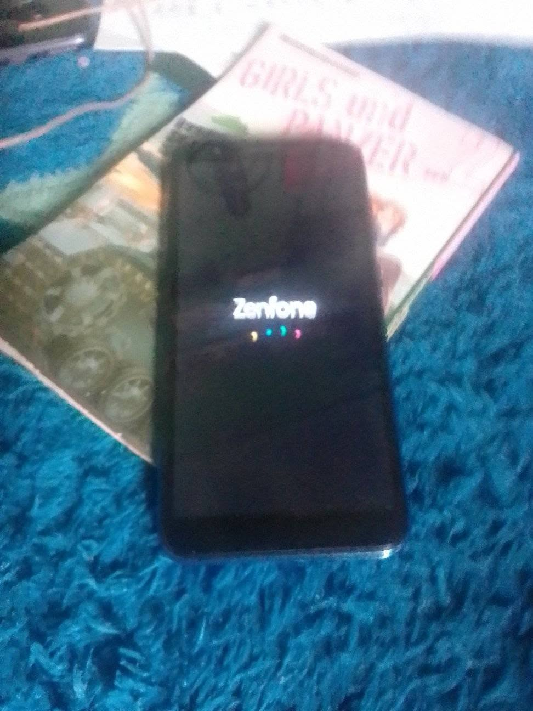
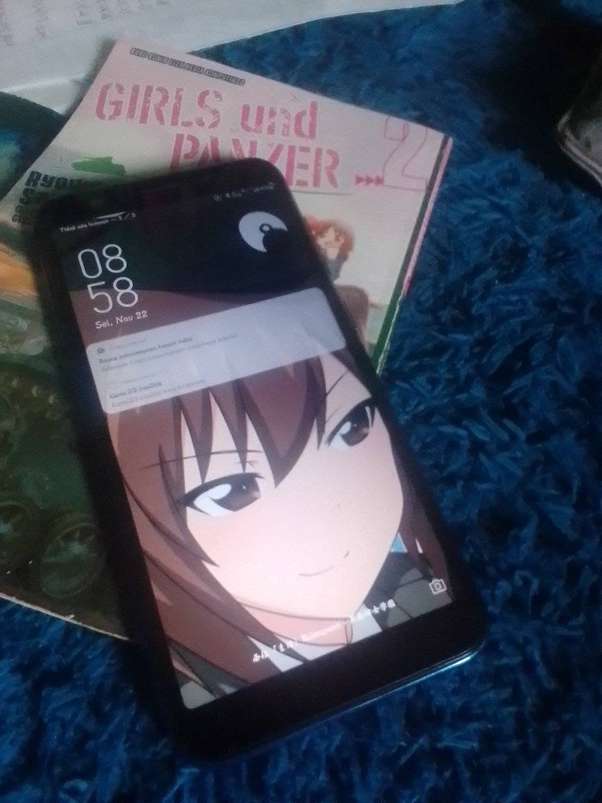

Ah sheet, lupa dah pengen restart hp ini namun sya butuh momen yg pas dulu Kronologi singkat: Hp dalam posisi lockscreen/layar off, notif wangsaff cecekitan truuuuttt truuttt nada deringnya, nah giliran mau buka lockscreen, pencet tombol power gk nyala layarnya, di DT2W maupun SU2W gk respon juga Sya tunggu dah sambil komplen sc bayu pengganti yg masih ngegantung, tau tau tuh hp langsung ke bootanimation Zenfone dan nyampe lockscreen Siap² dah Force Backup setelah itu restart hp nya Note: DT2W = Double Tap to Wake / Ketuk Dua Kali untuk Membangunkan SU2W = Swipe Up to Wake / Gesek Keatas untuk Membangunkan Force Backup = kegiatan memindahkan isi data dari media penyimpanan fisik ke media penyimpanan cloud secepat mungkin / harus diburu-buru kan agar sebagian ruang kosong


